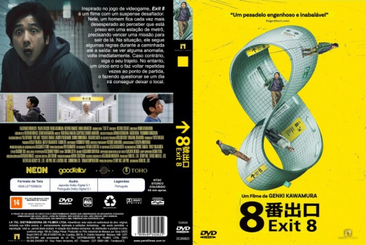

![link to Exit 8 [Autorado] on Rotten Tomatoes](../img/tomatoes.png)
![link to Exit 8 [Autorado] on TheMovieDb](../img/themoviedb.png)

Outro Título:８番出口
País:Japan, 95 minutos
Idiomas falados:Japonês, Português
Gênero(s):Terror, Mistério
Diretor(s):Genki Kawamura
Escritor(es):Genki Kawamura, Kentaro Hirase
Codec:MPEG-2 (DVD)
Número: 5942


Certificado:14
Sinopse:
Um homem fica preso em uma passagem infinita de metrô e precisa encontrar a Saída 8 para escapar. Para avançar, ele deve observar tudo com atenção: se notar qualquer anomalia, deve voltar imediatamente; se não houver nada estranho, deve continuar. Porém, qualquer erro o faz retornar ao início da jornada. Será que ele alcançará seu objetivo e escapará deste corredor infinito?
Elenco:

Tipo de mídia: DVD5,
Legendas: Português, Sem Legendas
Alugado: Não
Tela: Anamorphic Widescreen